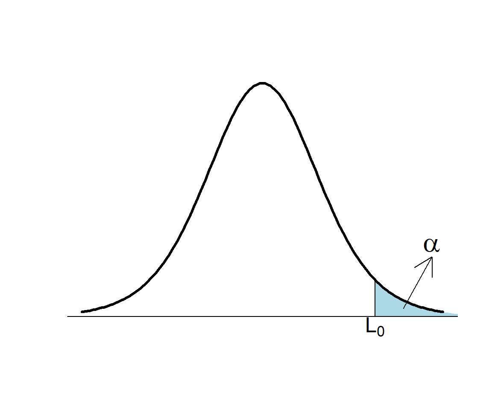
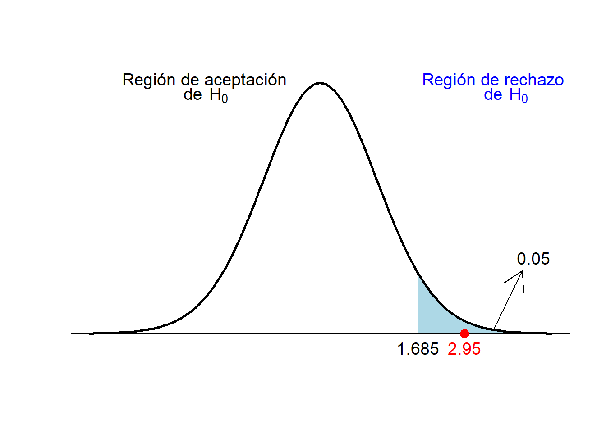

7 Introducción a los contrastes de hipótesis
En muchas situaciones, queremos tomar una decisión sobre si podemos aceptar o rechazar una hipótesis relativa al valor de un parámetro en una o varias poblaciones, y para tomar esta decisión, nos basamos en los datos de una muestra. Por ejemplo:
Queremos saber si una moneda está trucada a favor de cara. Para decidirlo, la lanzamos varias veces y contamos cuántas caras salen.
Queremos decidir si un tratamiento nuevo A es más efectivo que el tratamiento anterior B en la curación de una enfermedad X. Para decidirlo, llevamos a cabo un ensayo clínico, tratando con A un grupo de enfermos y con B otro grupo de enfermos, y comparamos la tasa de curación de los tratamientos sobre estos dos grupos.
El método estadístico que se usa para aceptar o rechazar una hipótesis a partir de los datos de una muestra recibe el nombre de contraste de hipótesis.
7.1 Hipótesis nula y alternativa
En un contraste de hipótesis, se comparan siempre dos hipótesis alternativas: la hipótesis nula \(H_{0}\) y la hipótesis alternativa \(H_{1}\). Se suele plantear formalmente \[ \left\{\begin{array}{ll} H_{0}:\text{hipótesis nula}\\ H_{1}:\text{hipótesis alternativa} \end{array} \right. \]
En los contrastes de hipótesis de esta asignatura:
La hipótesis nula \(H_{0}\) es “no hay diferencia”, “no pasa nada”, “no hay nada extraño” o el equivalente en el contexto del contraste:
La moneda es equilibrada (50% de probabilidad de cara).
Los tratamientos A y B son igual de efectivos en la curación de la enfermedad X.
La hipótesis alternativa \(H_{1}\) plantea la diferencia de la que buscamos evidencia:
La moneda está trucada a favor de cara (más del 50% de probabilidad de cara).
A es más efectivo que B en la curación de la enfermedad X.
Estamos dispuestos a aceptar \(H_0\) por defecto: que no hay diferencia, que no pasa nada.
Por defecto, estamos dispuestos a aceptar que la moneda es equilibrada (la mayoría lo son, ¿no?).
Por defecto, estamos dispuestos a aceptar que los dos tratamientos son igual de efectivos (si tomáis dos sustancias cualesquiera y las administráis a enfermos de X, lo más normal es que ninguna de los dos tenga efecto alguno, y por lo tanto que las dos sean igual de (in)efectivas).
Si obtenemos evidencia suficiente de que \(H_0\) es falsa, rechazaremos \(H_0\) en favor de \(H_1\) y concluiremos que \(H_1\) es verdadera.
¿Qué quiere decir “obtener evidencia suficiente de que \(H_0\) es falsa”? Pues que las pruebas obtenidas hacen que \(H_0\) sea inverosímil (difícil de creer) por comparación con \(H_1\):
Tendremos evidencia de que la moneda está trucada a favor de cara si en nuestra serie de lanzamientos la proporción de caras es tan grande que se nos hace muy difícil creer que la moneda sea equilibrada.
Tendremos evidencia de que A es más efectivo que B en la curación de X si en nuestro ensayo la tasa de curación de la enfermedad X con el tratamiento A es tan superior a la de B que se nos hace muy difícil creer que los dos tratamientos tengan la misma efectividad.
Si no obtenemos evidencia suficiente de que \(H_0\) es falsa, es decir, si nuestros datos son razonablemente compatibles con \(H_0\), no podremos rechazarla. Entonces, aceptaremos la hipótesis nula.
Aceptaremos que la moneda no está trucada a favor de cara si en nuestra serie de lanzamientos la proporción de caras no es lo bastante grande como para hacernos dudar de que sea equilibrada
Aceptaremos que A es igual de efectivo que B en la curación de X si en nuestro ensayo la tasa de curación de la enfermedad X con el tratamiento A no es lo bastante superior a la de B como para hacernos dudar de que los dos tratamientos sean igual de efectivos.
Importante
Rechazamos la hipótesis nula en favor de la alternativa cuando sería mucha casualidad obtener los resultados obtenidos si la hipótesis nula fuera cierta en vez de la alternativa.
Advertencia
Si rechazamos \(H_0\) en favor de \(H_1\), en general no será porque hayamos demostrado que \(H_0\) sea imposible, ni siquiera que sea improbable: tan solo resultará difícil de creer a la vista de los resultados de nuestro experimento.
En un juicio (en el que el acusado es inocente si no se demuestra lo contrario) se busca evidencia suficiente de que el acusado es culpable. Por lo tanto, esta es la hipótesis alternativa. Por otro lado, que “no pase nada” significa que el acusado es inocente: casi todo el mundo es inocente del cargo concreto que se juzga en ese momento. Esta será la hipótesis nula. Por lo tanto, el contraste es:
\[ \left\{\begin{array}{ll} H_{0}:\text{El acusado es inocente}\\ H_{1}:\text{El acusado es culpable} \end{array} \right. \]
En el juicio se aportan pruebas, y:
Si el jurado las encuentra lo bastante incriminatorias, “más allá de toda duda razonable”, declara culpable el acusado (rechaza \(H_0\) en favor de \(H_1\)).
Si el jurado no las encuentra lo bastante incriminatorias, lo considera no culpable (no rechaza \(H_{0}\)).
Observad que considerar no culpable no es lo mismo que demostrar que es inocente: simplemente, se considera que el acusado no es culpable porque no se ha encontrado evidencia suficiente de que sea culpable.
Un examen es un contraste de hipótesis. En este caso, “no pasa nada” significa que el estudiante es como si no hubiera ido al curso, no ha aprendido nada, y por lo tanto esta es la hipótesis nula. Con el examen buscamos evidencia de que el estudiante ha aprendido la materia, por lo tanto esta será la hipótesis alternativa. Así pues, el contraste es:
\[ \left\{\begin{array}{ll} H_{0}:\text{El estudiante no sabe la materia}\\ H_{1}:\text{El estudiante sabe la materia} \end{array} \right. \]
Tomamos una muestra de los conocimientos del estudiante (el estudiante hace el examen), y:
Si hay suficiente evidencia en favor de \(H_1\) (si el examen le sale lo bastante bien), rechazamos \(H_0\): decidimos que el estudiante sabe la materia, aprueba la asignatura.
Si no hay evidencia suficiente en favor de \(H_1\) (si el examen no le sale lo bastante bien), nos quedamos con \(H_0\): concluimos que el estudiante no ha aprendido la materia, suspende la asignatura.
Una prueba diagnóstica de una enfermedad es un contraste de hipótesis. En este caso, “no pasa nada” significa que la persona no tiene la enfermedad, y por lo tanto esta es la hipótesis nula. Con la prueba diagnóstica buscamos evidencia de que tiene la enfermedad, por lo tanto esta será la hipótesis alternativa. Es decir, el contraste es
\[ \left\{\begin{array}{ll} H_{0}:\text{La persona no tiene la enfermedad}\\ H_{1}:\text{La persona sí tiene la enfermedad} \end{array} \right. \]
Importante
Reglas para elegir \(H_0\) y \(H_1\) en esta asignatura:
\(H_0\) siempre se tiene que definir mediante una igualdad.
\(H_1\) es la hipótesis de la que buscamos evidencia, y se tiene que definir mediante algo “estricto”:
Hipótesis unilateral (one-sided; también de una cola, one-tailed): definida con < o con >.
Hipótesis bilateral (two-sided; también de dos colas, two-tailed): definida con \(\mathbf{\neq}\).
Los contrastes toman el nombre del tipo de hipótesis alternativa: contraste unilateral, contraste de dos colas, etc.
7.2 Un ejemplo
Tenemos una moneda, y creemos que está trucada en favor de cara. Queremos contrastarlo.
Aquí la variable aleatoria \(X\) que nos interesa es “tomamos una moneda legal, la lanzamos y anotamos si sale cara”, que es de Bernoulli con probabilidad de éxito (es decir, probabilidad de sacar cara con nuestra moneda) \(p_{\mathit{Cara}}\).
La hipótesis nula será que la moneda no está trucada (no le pasa nada a nuestra moneda), y la alternativa que la moneda está trucada en favor de cara. En términos de \(p_{\mathit{Cara}}\), el contraste es \[ \left\{\begin{array}{ll} H_{0}:p_{\mathit{Cara}}= 0.5\\ H_{1}:p_{\mathit{Cara}}> 0.5 \end{array} \right. \]
Ejemplo:Supongamos que lanzamos la moneda 3 veces y obtenemos 3 caras. ¿Es evidencia suficiente de que está trucada a favor de cara?
Llamemos \(S_3\) a la variable aleatoria “Número de caras en 3 lanzamientos de esta moneda.” Si la moneda no está trucada, \(S_3\) es binomial \(B(3,0.5)\), y por lo tanto \[ P(S_3=3)=0.5^{3}=0.125. \]
El resultado obtenido no es muy improbable con una moneda equilibrada: pasa, de media, en 1 de cada 8 secuencias de 3 lanzamientos. Por lo tanto, no vamos a considerarlo evidencia suficiente de que la moneda esté trucada. Aceptamos que la moneda es equilibrada.
Tip
A este tipo de procedimiento, usar la distribución binomial del número de éxitos en una muestra aleatoria simple de una variable aleatoria de Bernoulli para contrastar un valor de su probabilidad poblacional de éxito, lo llamaremos un test binomial.
Supongamos que ahora lanzamos la moneda 10 veces y obtenemos 10 caras. ¿Es evidencia suficiente de que está trucada a favor de cara?
Llamemos \(S_{10}\) a la variable aleatoria “Número de caras en 10 lanzamientos.” Si la moneda no está trucada, \(S_{10}\) es \(B(10,0.5)\) y por lo tanto \[ P(S_{10}=10)=0.5^{10}=0.001 \]
El resultado obtenido es bastante improbable si la moneda no está trucada: si la moneda fuera equilibrada, de media solo en 1 de cada 1000 secuencias de 10 lanzamientos obtendríamos 10 caras. Es decir:
El resultado de nuestro experimento sería muy raro si la moneda fuera equilibrada, lo que nos hace dudar de que sea equilibrada.
Lo consideramos evidencia de que está trucada.
Tip
Observad el razonamiento que hemos efectuado. Tenemos una hipótesis nula y una alternativa, realizamos un experimento y obtenemos un resultado que es muy improbable si la hipótesis nula es verdadera. Una de dos:
- O la hipótesis nula es falsa.
- O la hipótesis nula es verdadera y ha pasado algo muy raro.
¿Qué es lo más sensato concluir? Teniendo en cuenta que las cosas muy raras no suelen pasar, lo más sensato es concluir que la hipótesis nula es falsa.
El procedimiento que hemos seguido en los dos ejemplos anteriores ha sido el siguiente:
Hemos planteado el contraste: \[ \left\{\begin{array}{ll} H_{0}:p_{\mathit{Cara}}= 0.5\\ H_{1}:p_{\mathit{Cara}}> 0.5 \end{array} \right. \]
Hemos recogido una muestra aleatoria simple de valores: la secuencia de lanzamientos.
Hemos elegido un estadístico de contraste con distribución de probabilidades conocida cuando \(H_0\) es verdadera: en nuestro caso, el número de caras.
Hemos calculado el valor de este estadístico sobre nuestra muestra.
Hemos calculado la probabilidad de que el estadístico tome el valor observado si \(H_0\) es verdadera.
Si esta probabilidad es muy pequeña, lo tomamos como evidencia de que \(H_1\) es verdadera.
Si no es lo bastante pequeña, no consideramos que hayamos obtenido evidencia de que \(H_0\) sea falsa y \(H_1\) verdadera.
Bien, esto es lo que hemos hecho, pero no es del todo correcto. En los puntos (5) y (6) decimos que: “Calculamos la probabilidad de que el estadístico tome el valor observado si \(H_0\) es verdadera y si es muy pequeña, lo consideramos evidencia de que \(H_1\) es verdadera.” ¿Seguro que queremos hacer esto?
Supongamos que, en el contraste anterior, lanzamos la moneda 10 veces y obtenemos 10 cruces. ¿Es evidencia suficiente de que está trucada en favor de cara? Obviamente no lo puede ser, pero la probabilidad es la misma que antes: \[ P(S_{10}=0)=0.5^{10}=0.001 \]
En muchos casos, la probabilidad de obtener exactamente lo que hemos obtenido puede ser muy pequeña, independientemente de lo que hayamos obtenido. Por ejemplo, supongamos que lanzamos la moneda 10000 veces y obtenemos 5000 caras. Si la moneda es equilibrada, el número de caras seguirá una distribución binomial \(B(10000,0.5)\) y la probabilidad de obtener 5000 caras será \[ \binom{10000}{5000}0.5^{10000}=0.008 \] muy pequeña, pero está claro que si la mitad de lanzamientos dan cara, no se puede considerar evidencia de que la moneda esté trucada.
Así que:
Importante
En realidad, en (5) se calcula la probabilidad de que, si \(H_0\) es verdadera, el estadístico tome un valor tan extremo o más, en el sentido de \(H_1\), que el obtenido. A esta probabilidad la llamamos el p-valor.
En nuestro ejemplo de la moneda, como la hipótesis nula es \(p_{\mathit{Cara}}= 0.5\) y la hipótesis alternativa es \(p_{\mathit{Cara}}> 0.5\), el p-valor es la probabilidad de que, si \(p_{\mathit{Cara}}= 0.5\), el número de caras sea mayor o igual que el obtenido en nuestra muestra.
En los dos ejemplos anteriores concretos, donde obteníamos 3 caras en 3 lanzamientos y 10 caras en 10 lanzamientos, era lo mismo pedir que el número de caras fuera igual al obtenido y pedir que el número de caras fuera mayor o igual que el obtenido, porque en los dos experimentos hemos obtenido el número máximo posible de caras; por ejemplo, sacar 3 o más caras en 3 lanzamientos es exactamente lo mismo que sacar 3 caras en 3 lanzamientos. Pero en general esto no será así.
Ejemplo:Volvamos a nuestro contraste \[ \left\{\begin{array}{ll} H_{0}:p_{\mathit{Cara}}= 0.5\\ H_{1}:p_{\mathit{Cara}}> 0.5 \end{array} \right. \] Supongamos que lanzamos la moneda 10 veces y obtenemos 7 caras. ¿Es evidencia suficiente de que está trucada a favor de cara?
Seguimos llamando \(S_{10}\) a la variable aleatoria “Número de caras en 10 lanzamientos”. Si la moneda no está trucada, \(S_{10}\) es \(B(10,0.5)\). Como la hipótesis alternativa es \(p_{\mathit{Cara}}> 0.5\), “obtener un número de caras tan extremo o más que el que hemos obtenido en el sentido de la hipótesis alternativa” es sacar tantas caras como las que hemos obtenido o más, es decir sacar 7 o más caras. Por lo tanto \[ \text{p-valor}=P(S_{10}\geqslant 7)=0.172 \]
Un número de caras igual o superior al obtenido no es muy improbable si la moneda no está trucada: pasaría en 1 de cada 6 secuencias de 10 lanzamientos. Por lo tanto, como es bastante compatible con el equilibrio de la moneda, no lo podemos considerar evidencia de que esté trucada a favor de cara.
El p-valor de un contraste es la probabilidad de que, si la hipótesis nula es verdadera, el estadístico de contraste tome en una muestra aleatoria simple del mismo tamaño que la nuestra un valor tan o más extremo, en el sentido de la hipótesis alternativa, que el obtenido con la muestra usada para realizar el contraste.
Lo repetimos, poniendo énfasis en los componentes fundamentales de la definición. El p-valor es:
- La probabilidad de que,
- si la hipótesis nula es verdadera,
- el estadístico de contraste tome en una muestra aleatoria simple del mismo tamaño que la nuestra
- un valor tan o más extremo, en el sentido de la hipótesis alternativa,
- que el obtenido con nuestra muestra.
7.3 Tipo de errores
La comparación entre la realidad y la conclusión de un contraste da lugar a cuatro situaciones posibles, resumidas en la tabla siguiente:
Si \(H_0\) es la hipótesis verdadera en la realidad y nosotros decidimos que \(H_1\) es verdadera:
La conclusión del contraste es errónea. Lo llamaremos un error de tipo I, error \(\alpha\) o falso positivo.
Denotaremos por \(\alpha\) la probabilidad de cometer un error de tipo I, es decir, de rechazar \(H_0\) si es verdadera, y la llamaremos el nivel de significación: \[ \alpha=P(\text{Rechazar } H_0\,|\, H_0\text{ verdadera}). \]
Si \(H_1\) es la hipótesis verdadera en la realidad y nosotros aceptamos \(H_0\):
La conclusión del contraste es errónea. Lo llamaremos un error de tipo II, error \(\beta\) o falso negativo.
Denotaremos por \(\beta\) la probabilidad de cometer un error de tipo II, es decir, de aceptar \(H_0\) si \(H_1\) es verdadera: \[ \beta=P(\text{Aceptar } H_0\,|\, H_1\text{ verdadera}). \]
Si \(H_1\) es la hipótesis verdadera en la realidad y nosotros decidimos rechazar \(H_0\) en favor de \(H_1\):
La conclusión del contraste es correcta. Lo llamaremos un verdadero positivo.
La probabilidad de acertar con un verdadero positivo es \(1-\beta\) y la llamaremos la potencia:
\[ 1-\beta=P(\text{Rechazar } H_0\,|\, H_1\text{ verdadera}). \]
Si \(H_0\) es la hipótesis verdadera en la realidad y nosotros la aceptamos:
La conclusión del contraste es correcta. Lo llamaremos un verdadero negativo.
La probabilidad de acertar con un verdadero negativo es \(1-\alpha\) y la llamaremos el nivel de confianza: \[ 1-\alpha=P(\text{Aceptar } H_0\,|\, H_0\text{ verdadera}). \]
Importante
En el contexto de un contraste de hipótesis,
Un resultado positivo es rechazar la hipótesis nula y decidir que la alternativa es la verdadera (hemos encontrado algo).
Un resultado negativo es aceptar la hipótesis nula (no hemos encontrado nada y nos quedamos con la hipótesis nula).
Repetimos:
El nivel de significación de un contraste es la probabilidad de que, si la hipótesis nula es verdadera, nosotros nos equivoquemos y la rechacemos en favor de la alternativa: \[ \alpha=P(\text{Rechazar } H_0\,|\, H_0\text{ verdadera}). \]
La potencia de un contraste es la probabilidad de que, si la hipótesis alternativa es verdadera, nosotros lo detectemos y rechacemos la hipótesis nula en favor de la alternativa: \[ 1-\beta=P(\text{Rechazar } H_0\,|\, H_1\text{ verdadera}). \]
En un test de embarazo, el contraste que se realiza es: \[ \left\{\begin{array}{ll} H_{0}:\text{No estás embarazada}\\ H_{1}:\text{Estás embarazada} \end{array} \right. \]
En un juicio, donde se tiene que declarar un acusado inocente o culpable, el contraste era \[ \left\{\begin{array}{ll} H_{0}:\text{El acusado es inocente}\\ H_{1}:\text{El acusado es culpable} \end{array} \right. \]
Se pueden cometer dos errores:
Error de tipo I: Declarar culpable a un inocente.
Error de tipo II: Declarar inocente a un culpable.
Es peor el error de tipo I, conviene minimizar la probabilidad de cometerlo. Por eso solo se declara a alguien culpable cuando las pruebas “lo demuestran más allá de toda duda razonable”.
Ejemplo:En un examen, el contraste era \[ \left\{\begin{array}{ll} H_{0}:\text{El estudiante no sabe la materia}\\ H_{1}:\text{El estudiante sabe la materia} \end{array} \right. \]
Los errores que pueden darse son:
Que apruebe un estudiante que no sabe la materia
Que suspenda un estudiante que sí sabe la materia
Ejercicio: ¿Cuál es el de tipo I y cuál el de tipo II? ¿Cuál creéis que es peor?
Ejercicio: Recordad la interpretación de una prueba diagnóstica como un contraste de hipótesis. Interpretad su especificidad y sensibilidad en términos de \(\alpha\) y \(\beta\).
Normalmente, se considera peor cometer un error de tipo I que cometer un error de tipo II. Por lo tanto, el objetivo primario en un contraste es encontrar una regla de decisión que tenga poca probabilidad \(\alpha\) de error de tipo I. Pero también querríamos minimizar la probabilidad \(\beta\) de error de tipo II. El problema es que cuando hacemos que \(\alpha\) disminuya, \(\beta\) suele aumentar, porque al hacer más difícil rechazar la hipótesis nula, aumenta el riesgo de no rechazarla aunque sea falsa.
¿Qué se suele hacer?
Se da una regla de decisión para el nivel de significación \(\alpha\) deseado.
Después, se toma el tamaño \(n\) adecuado de la muestra para que la potencia sea la deseada.
Importante
Es costumbre (pero solo eso, una costumbre, no un dogma de fe) tomar \(\alpha=0.05\), una probabilidad de 1 entre 20: algo menos que la probabilidad de sacar 4 caras seguidas con una moneda equilibrada.
Tomando este \(\alpha=0.05\), aceptamos una probabilidad de equivocarnos rechazando \(H_0\) en favor de \(H_1\) de 0.05. Es decir, asumimos que, de media, nos vamos a equivocar en 1 de cada 20 veces en que la hipótesis nula sea verdadera.
7.4 Ejemplo: El test t
La concentración media de calcio en plasma en hombres sanos de 22 a 44 años es de 2.5 mmol/l. Nos preguntamos si los hombres jóvenes con diabetes tienen una concentración de calcio en plasma mayor que estos 2.5 mmol/l. Traducimos esta cuestión en un contraste de hipótesis sobre la concentración media de calcio en plasma en los hombres jóvenes con diabetes, a la que llamaremos \(\mu\):
La hipótesis nula será que no hay diferencia entre \(\mu\) y la concentración media de calcio en plasma en los hombres jóvenes sanos, es decir, que \(\mu=2.5\)
La hipótesis alternativa es de lo que buscamos evidencia: que \(\mu>2.5\).
Por lo tanto, el contraste que queremos realizar es \[ \left\{\begin{array}{l} H_{0}:\mu=2.5\\ H_{1}:\mu >2.5 \end{array} \right. \]
Llamemos \(X\) a la variable aleatoria “Tomamos un hombre diabético de 22 a 44 años y le medimos la concentración de calcio en plasma en mmol/l”, cuya media hemos llamado \(\mu\). Vamos a suponer en esta sección que esta variable \(X\) sigue una ley normal.
En una muestra de 40 diabéticos de esta franja de edad, se obtuvo una concentración media de calcio en plasma de \(\overline{x}=3.2\) mmol/l con una desviación típica muestral \(\widetilde{s}=1.5\). Vamos a suponer que podemos considerar esta muestra de diabéticos jóvenes como aleatoria simple.
Nos encontramos ante un caso particular de la situación siguiente. Tenemos una variable aleatoria poblacional \(X\) normal de media \(\mu\) y planteamos el contraste \[ \left\{\begin{array}{l} H_{0}:\mu=\mu_0\\ H_{1}:\mu >\mu_0 \end{array} \right. \] para un valor concreto \(\mu_0\). Queremos tomar una decisión a partir de una muestra aleatoria simple.
La idea es que rechazaremos \(H_0\) en favor de \(H_1\) si la media muestral es mucho mayor que \(\mu_0\): tanto, que sería muy improbable que fuera así de grande si la media poblacional fuera exactamente \(\mu_0\). El problema es que no sabemos calcular \(P(\overline{X}-\mu_0)\) si solo sabemos que \(X\) es normal de media \(\mu_0\), porque no sabemos la distribución de \(\overline{X}\) (sabemos que será normal de media \(\mu_0\), pero desconocemos su desviación típica). Por lo tanto tenemos que usar otro estadístico de contraste, \(\overline{X}\) no funcionará.
Llegados a este punto, nos acordamos de que si \(H_0\) es verdadera, es decir, si la media de \(X\) es \(\mu_0\), entonces \[ T=\frac{\overline{X}-\mu_0}{{\widetilde{S}_X}/{\sqrt{n}}} \] tiene distribución \(t_{n-1}\). Y podemos traducir que “\(\overline{X}\) sea mucho mayor que \(\mu_0\)” en que “\(T\) sea mucho mayor que 0”.
Entonces, la idea que guiará el procedimiento para tomar una decisión en este contraste será la siguiente:
Rechazaremos \(H_0\) en favor de \(H_1\) si este estadístico de contraste \(T\) toma un valor “muy grande” sobre la muestra.
La definición precisa de “muy grande” dependerá del valor de \(\alpha\) que queramos tomar, es decir, de la probabilidad de cometer un error de tipo I que estemos dispuestos a asumir: cuanto menor queramos que sea \(\alpha\), mayor tendrá que ser la evidencia a favor de \(\mu>\mu_0\), es decir, mayor tendrá que ser \(T\). Aquí vamos a tomar el valor usual \(\alpha=0.05\).
Sea \(T_0\) el valor que toma el estadístico de contraste \(T\) en nuestra muestra. Rechazaremos \(H_{0}\) si \(T_0\) es mayor que un cierto umbral \(L_0\), que determinamos a partir de \(\alpha\):
\[ \begin{array}{l} \alpha = P(\text{Rechazar } H_{0}\,|\, H_{0} \text{ cierta})=P(T> L_0)\\ \qquad\quad \Longrightarrow 1-\alpha= P(T\leqslant L_0)\Longrightarrow L_0= t_{n-1,1-\alpha} \end{array} \]
Por lo tanto, para que el nivel de significación del contraste sea \(\alpha\),
Rechazaremos \(H_0\) si \(T_0>t_{n-1,1-\alpha}\)
Llamaremos a esta regla una regla de rechazo para este tipo de contraste.
Volvamos a nuestro ejemplo de los jóvenes diabéticos \[ \left\{\begin{array}{l} H_{0}:\mu=2.5\\ H_{1}:\mu > 2.5 \end{array} \right. \] Si \(\alpha=0.05\) y \(n=40\), el umbral a partir del cual rechazamos \(H_0\) es \(t_{n-1,1-\alpha}=t_{39,0.95}=1.685\).
En nuestra muestra tenemos que \(\overline{x}=3.2\), \(\widetilde{s}=1.5\) y \(n=40\), por lo tanto el estadístico de contraste vale \[ T_0=\frac{3.2-2.5}{1.5/\sqrt{40}}=2.95 \]

Como 2.95>1.685, concluimos con un nivel de significación del 5% que el nivel medio de calcio en sangre en los jóvenes diabéticos es mayor que en los jóvenes sanos.
Vamos a ver cómo entra en juego el p-valor. Recordad que rechazamos \(H_0\) cuando \(T_0>t_{n-1,1-\alpha}\): \[ \begin{array}{l} \text{Rechazamos $H_0$} \Longleftrightarrow T_0> t_{n-1,1-\alpha}\\ \qquad \Longleftrightarrow P(T\geqslant T_0)< P(T\geqslant t_{n-1,1-\alpha})\\ \qquad \Longleftrightarrow P(T\geqslant T_0)< 1-P(T\leqslant t_{n-1,1-\alpha})=1-(1-\alpha)=\alpha\\ \qquad \Longleftrightarrow P(T\geqslant T_0)<\alpha \end{array} \]
I ahora notad que \(P(T\geqslant T_0)\) es la probabilidad de que, si \(H_0\) es verdadera, el estadístico de contraste \(T\) tome un valor tan o más extremo, en el sentido de \(H_1: \mu>2.5\), que el obtenido en nuestra muestra, \(T_0\): ¡es el p-valor del contraste! Por lo tanto, tenemos otra regla de rechazo, equivalente a la anterior:
Rechazaremos \(H_0\) si el p-valor es menor que \(\alpha\)
En nuestro ejemplo, ya hemos calculado \(T_0=2.95\). Entonces, \[ \text{p-valor} =P(T\geqslant 2.95)=P(t_{39}\geqslant 2.95)=0.003 \] Como el p-valor es menor que 0.05:
Concluimos con un nivel de significación del 5% que el nivel medio de calcio en plasma de los jóvenes diabéticos es mayor que el de los jóvenes sanos.
Esto se suele expresar diciendo que
Hemos obtenido evidencia estadísticamente significativa de que el nivel medio de calcio en plasma de los jóvenes diabéticos es mayor que el de los jóvenes sanos.
Importante
A este tipo de procedimiento para comparar la \(\mu\) de una variable con un valor dado \(\mu_0\), usando que
\[
T=\frac{\overline{X}-\mu_0}{{\widetilde{S}_X}/{\sqrt{n}}}
\] sigue una distribución t de Student con \(n-1\) grados de libertad, \(t_{n-1}\), se le llama un test t. Solo se puede utilizar cuando la variable sigue una ley normal o el tamaño de la muestra es suficientemente grande (\(n \geq 40\)) en nuestra asignatura.
Fijaos en que nuestra conclusión ha sido que “concluimos con un nivel de significación del 5% que el nivel medio de calcio en sangre de los jóvenes diabéticos es mayor que el de los jóvenes sanos.” Por lo tanto, aceptamos una probabilidad del 5% de cometer un falso positivo. Si en realidad el nivel medio de calcio en sangre de los jóvenes diabéticos fuera el mismo que el de los sanos, la probabilidad que tendríamos de equivocarnos y concluir que el nivel medio de calcio en sangre de los jóvenes diabéticos es mayor que el de los sanos es del 5%.
Importante
Que tengamos un 5% de probabilidad de equivocarnos significa que, si la hipótesis nula es verdadera, un 5% de las muestras aleatorias de 40 diabéticos sanos dan un valor de \(T\) que nos hace rechazar la hipótesis nula.
7.5 Intervalo de confianza de un contraste
El intervalo de confianza de nivel de confianza \(1-\alpha\) de un contraste es un intervalo que tiene una probabilidad \(1-\alpha\) de contener el parámetro poblacional que contrastamos, en el sentido de los intervalos de confianza del tema anterior: se calcula con una fórmula que en un \((1-\alpha)\cdot 100\%\) de las veces que se aplica a una muestra aleatoria simple, produce un intervalo que contiene el parámetro poblacional.
El intervalo de confianza de un contraste se obtiene imponiendo que el estadístico de contraste pertenezca a la región de aceptación para el nivel de significación \(\alpha\) y despejando el parámetro poblacional.
Importante
Cuando \(H_1\) es bilateral, el intervalo de confianza del contraste coincide con el intervalo de confianza dado en el tema anterior. Pero cuando \(H_1\) es unilateral, el intervalo de confianza del contraste es infinito en el lado definido por la hipótesis alternativa.
Por ejemplo, consideremos el caso de un test t para efectuar un contraste \[ \left\{\begin{array}{l} H_{0}:\mu=\mu_0\\ H_{1}:\mu > \mu_0 \end{array} \right. \] Aceptamos \(H_0\) con nivel de significación \(\alpha\) cuando \[ \dfrac{\overline{X}-\mu_0}{{\widetilde{S}_X}/{\sqrt{n}}}\leqslant t_{n-1,1-\alpha} \] Despejando \(\mu_0\), obtenemos \[ \overline{X}- t_{n-1,1-\alpha}\cdot \dfrac{\widetilde{S}_X}{\sqrt{n}}\leqslant \mu_0 \] Por lo tanto, el intervalo de confianza de nivel de confianza \(1-\alpha\) para este contraste es \[ \Bigg[\overline{X}- t_{n-1,1-\alpha}\cdot \dfrac{\widetilde{S}_X}{\sqrt{n}},\infty\Bigg) \] Si la \(\mu_0\) que contrastamos pertenece a este intervalo, no podemos concluir que la \(\mu\) poblacional sea mayor que \(\mu_0\), y por lo tanto no podemos rechazar que \(\mu=\mu_0\).
Los valores de \(\mu_0\) en este intervalo son tan grandes que con nuestra muestra no hemos obtenido evidencia de que la \(\mu\) real sea mayor que ellos.
En el ejemplo de los diabéticos discutido anteriormente, da el intervalo \[ \Bigg[3.2- 1.73\cdot \dfrac{1.5}{\sqrt{20}},\infty\Bigg)=[2.62,\infty) \]
Concluimos que, con un nivel de confianza del 95%, la concentración media de calcio en sangre en los jóvenes diabéticos es como mínimo 2.62, y que por lo tanto, con este nivel de confianza, no puede ser 2.5, aunque por poco.
Si efectuamos un contraste bilateral con un test t \[ \left\{\begin{array}{l} H_{0}:\mu=\mu_0\\ H_{1}:\mu \neq \mu_0 \end{array} \right. \] aceptamos \(H_0\) con nivel de significación \(\alpha\) cuando \[ -t_{n-1,1-\alpha/2}\leqslant \dfrac{\overline{X}-\mu_0}{{\widetilde{S}_X}/{\sqrt{n}}}\leqslant t_{n-1,1-\alpha/2} \] Despejando \(\mu_0\), obtenemos: \[ \overline{X}- t_{n-1,1-\alpha/2}\cdot \dfrac{\widetilde{S}_X}{\sqrt{n}}\leqslant \mu_0 \leqslant \overline{X}+ t_{n-1,1-\alpha/2}\cdot \dfrac{\widetilde{S}_X}{\sqrt{n}} \] Por lo tanto, el intervalo de confianza de nivel de confianza \(1-\alpha\) para este contraste es \[ \Bigg[\overline{X}- t_{n-1,1-\alpha/2}\cdot \dfrac{\widetilde{S}_X}{\sqrt{n}},\overline{X}+ t_{n-1,1-\alpha/2}\cdot \dfrac{\widetilde{S}_X}{\sqrt{n}}\Bigg] \] ¿Os suena? Llamando \(q\) a \(1-\alpha\), de manera que \[ 1-\frac{\alpha}{2}=1-\frac{1-q}{2}=\frac{1+q}{2}, \] da \[ \Bigg[\overline{X}- t_{n-1,(1+q)/2}\cdot \dfrac{\widetilde{S}_X}{\sqrt{n}},\overline{X}+ t_{n-1,(1+q)/2}\cdot \dfrac{\widetilde{S}_X}{\sqrt{n}}\Bigg] \]
Es el intervalo de confianza para \(\mu\) basado en la t de Student que vimos en el tema anterior.
Importante
En resumen, dado un contraste de hipótesis, podemos decidir si rechazamos \(H_0\) en favor de \(H_1\) con nivel de significación \(\alpha\) usando:
La región crítica: Si el estadístico de contraste cae dentro de la región crítica para el nivel de significación \(\alpha\), rechazamos \(H_0\).
El p-valor: Si el p-valor es menor que el nivel de significación \(\alpha\), rechazamos \(H_0\).
El intervalo de confianza: Si el valor que contrastamos del parámetro poblacional no pertenece al intervalo de confianza de nivel de confianza \(1-\alpha\), rechazamos \(H_0\).
Los tres métodos son equivalentes.
En la práctica no se usa la región crítica: su papel se reduce a ser un paso intermedio en la obtención de las otras dos reglas de rechazo. Por otro lado, el uso del p-valor es muy discutido porque da lugar a falsas interpretaciones (la probabilidad de que la hipótesis nula sea verdadera; un valor a comparar con el umbral absoluto 0.05 sin tener nada más en consideración; …), pero bien entendido (como una medida de la consistencia de lo observado con la hipótesis nula) es útil.
Lo más adecuado es dar el p-valor y el intervalo de confianza:
- El p-valor, porque aun es lo que todo el mundo espera y para que el lector lo pueda comparar con el nivel de significación que considere oportuno.
- El intervalo de confianza, porque muestra el margen con el cual hemos aceptado o rechazado la hipótesis nula con nuestro nivel de significación.
Si no establecemos un nivel de significación \(\alpha\), lo habitual es:
Aceptar \(H_0\) si el p-valor es mayor que 0.1: se dice que el p-valor no es estadísticamente significativo
Rechazar \(H_0\) si el p-valor es menor que 0.05: se dice que el p-valor es estadísticamente significativo
Si el p-valor está entre 0.05 y 0.1 y no se ha fijado nivel de significación, lo mejor que podéis hacer es no concluir nada y decir que es necesario repetir el estudio con una muestra mayor.
Cuando el p-valor es menor que 0.05, se suelen distinguir tres franjas:
- Significativo si está entre 0.01 y 0.05
- Fuertemente significativo si está entre 0.001 y 0.01
- Muy significativo si es menor que 0.001
Normalmente estas franjas se indican con un código de asteriscos:
Un asterisco, *, para los p-valores entre 0.01 y 0.05
Dos asteriscos, **, para los p-valores entre 0.001 y 0.01
Tres asteriscos, ***, para los p-valores por debajo de 0.001.